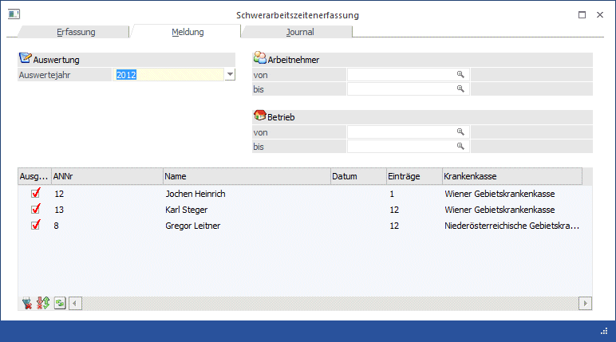
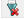
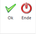

Im Register Meldung können die Meldungen, die gesammelt einmal jährlich elektronisch zu übermitteln sind, vorbereitet und ausgegeben werden.
Hinweis:
Die Meldungen müssen für alle AN (auch jene, die ggf. während des Jahres ausgeschieden sind) zwischen Anfang Jänner und Ende Februar übermittelt werden.

Einstellungsmöglichkeiten
Ø Auswertejahr
Aus der Auswahllistbox kann das Jahr gewählt werden, für das die Meldungen erstellt werden sollen.
Ø Arbeitnehmer von - bis
Hier kann eingeschränkt werden, für welche AN die Schwerarbeitsmeldung durchgeführt werden soll. Wie die AN-Nummer eingegeben werden kann, dazu gibt es mehrere Möglichkeiten. Details dazu entnehmen Sie bitte dem Kapitel Aufruf einer AN-Nummer. Wird in den Feldern von - bis ein AN eingetragen, so wird daneben der Name des AN angezeigt, wobei der Name unterstrichen dargestellt wird. Durch einen Klick auf den AN wird standardmäßig der AN-Stamm aufgerufen. Über die rechte Maustaste kann aber individuell eingestellt werden, welche Aktion ausgelöst werden soll. Dabei stehen folgende Optionen zur Verfügung:

ü Arbeitnehmerstamm
Es wird der
AN-Stamm aufgerufen, wobei gleich der Datensatz des angezeigten AN angezeigt
wird.
ü Arbeitnehmerinfo
Es wird die
Arbeitnehmerinfo im Programm WinLine INFO geöffnet.
ü Jahreslohnkonto
Es wird das
Steuerfenster für das Jahreslohnkonto aufgerufen, wo der ausgewählte AN gleich
vorgeschlagen wird. Die Ausgabe muss nur mehr durchgeführt werden.
ü Arbeitnehmer Stammblatt
Es wird
das Steuerfenster für das Arbeitnehmer Stammblatt aufgerufen, wo der ausgewählte
AN gleich vorgeschlagen wird. Die Ausgabe muss nur mehr durchgeführt werden.
ü Lohnerfassung A
Es wird die
Einzelabrechnung aufgerufen, wobei gleich alle Daten des ausgewählten AN
abgerufen werden. Bei diesen Punkt ist darauf zu achten, dass ggf. die
automatischen Lohnarten abgearbeitet werden.
Die zuletzt getätigte Einstellung wird als Standard übernommen, d.h. wenn das nächste Mal nur auf den AN-Namen geklickt wird, dann wird die letzte Aktion automatisch durchgeführt. Diese Einstellung wird pro Benutzer gespeichert.
Ø Betrieb von - bis
Einschränkung der Betriebe, für die die Schwerarbeitsmeldung durchgeführt werden soll.
Durch Anklicken des Anzeigen-Buttons werden in der Tabelle die vorhandenen Datensätze angezeigt. Dabei sind folgende Informationen ersichtlich:
Ø Ausgabe
Über die Checkbox kann gesteuert werden, ob der jeweilige Datensatz ausgegeben werden soll oder nicht.
Ø ANNr
Hier wird die entsprechende AN-Nummer angezeigt, für die eine Schwerarbeitsmeldung vorhanden ist.
Ø Name
Anzeige des AN-Namens
Ø Datum
In dieser Spalte wird nur dann ein Datum angezeigt, wenn die Schwerarbeitsmeldung bereits einmal erstellt und übermittelt wurde (ELDA).
Ø Einträge
Hier werden die Anzahl der Erfassungszeilen, die für diesen AN vorhanden sind, angezeigt.
Buttons der Tabelle
Ø

Alle-ButtonDurch Anklicken des Alle-Buttons werden alle Einträge in der Tabelle zur Ausgabe markiert.
Ø Umkehren-Button
Durch Anklicken des Umkehren-Buttons wird die Selektion "Ausgabe" in das Gegenteil gekehrt: die selektierten AN werden deselektiert und die deselektierten AN werden selektiert.
Ø Anzeigen-Button
Durch Anklicken des Anzeigen-Buttons wird die Tabelle anhand der Selektionskriterien neu gefüllt.
Buttons

Ø OK
Durch Anklicken des OK-Buttons bzw. durch Drücken der F5-Taste wird für alle AN, bei denen die Option Ausgabe aktiviert ist, eine Schwerarbeitsmeldung erzeugt und in der ELDA-Ausgabe bereitgestellt. War bei einem AN, der mit ausgegeben wird, im Feld Datum ein Wert enthalten, so wird automatisch auch eine Stornomeldung der ursprünglichen Meldung mit erzeugt. Mit dem Erzeugen der Schwerarbeitsmeldung wird auch ein Eintrag im AN-Stamm (Register Formulare/Ausgegebene Meldungen) erzeugt, anhand dessen man feststellen kann, ob und wann eine Schwerarbeitsmeldung für diesen AN erstellt wurde. Wurde die Meldung auch via ELDA übermittelt, wird dort auch das Übermittlungsdatum angeführt.
Ø Ende
Durch Drücken der ESC-Taste wird das Fenster geschlossen, es werden keine Meldungen erzeugt.